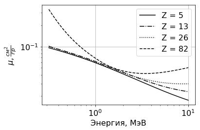
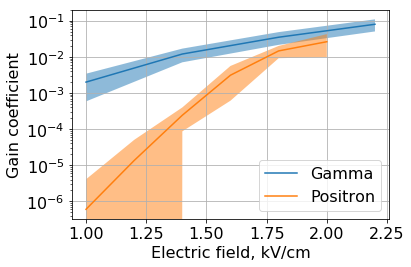

Рекомендации по проверке графиков и диаграмм
Требование к графикам
В методическом пособии приведены требования к содержимому графиков и диаграмм, используемых студентами в лабораторном отчете. Для построения графиков студенты могут использовать различные пакеты, так что общий стиль и внешний вид может отличаться, но все основные пакеты имеют достаточный функционал, чтобы отвечать эти требованиям, они позволяют:
- Строить все основные типы графиков: кривые, точки, гистограммы;
- Добавлять подписи к отдельным элементам графика (и управлять их положением), при этом может быть использован русский язык, Unicode или Latex, так что от студентов ожидается красивое оформление формул с использованием спецсимволов и символов греческого или иного алфавита;
- Масштабировать график для наиболее удачного представления, в том числе менять положение нуля, устанавливать логарифмический масштаб для осей графика, сетку на график, менять положение легенды;
- Управлять осями: строить на одном графике оси для разных величин, устанавливать промежуточные метки на осях, изменять подписи к меткам.
- Использовать различные цвета и прозрачность, а в случае, если студент использует черно-белую печать --- различные типы линий (пунктир, штрих, штрихопунктир и т. д.) и штриховки (линейчатая, точечная и пр.);
- Отрисовывать легенду к графику;
- Рисовать ошибки измерения, которые могут быть различны как для каждой оси, так и для каждого измерения. Также можно указать ошибки в виде области;
- Экспортировать графики для печати;
- Устанавливать размеры графика и размеры и толщину отдельных элементов.
Примеры
Здесь приведены несколько примеров того, как могут выглядеть те или иные элементы графика.
Пример 1
- График адаптированн для черно-белой печати;
- Используется двойной логарифмический масштаб;
- Используется русский шрифт и формулы LaTex;
- Есть сетка.

Пример 2
- График адаптированн для черно-белой печати;
- Показаны ошибки высоты бина гистограммы.

Пример 3
- График адаптированн для цветной печати;
- Показаны ошибки измерения по оси X, различные для каждого измерения.

Пример 4
- Используется категориальная ось Y.

Пример 5
- Используются проценты для оси Y.

Пример 6
- Используются разные масштабы для оси Y: левая ось в кэВ/см, правая --- в кВ/см.

Пример 7
- Ошибки результатов моделирования представлены в виде области.
